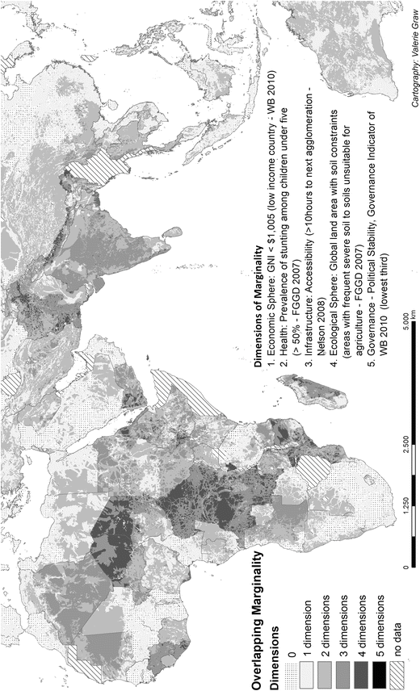
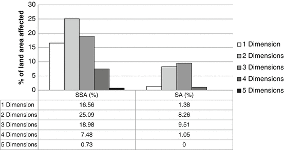
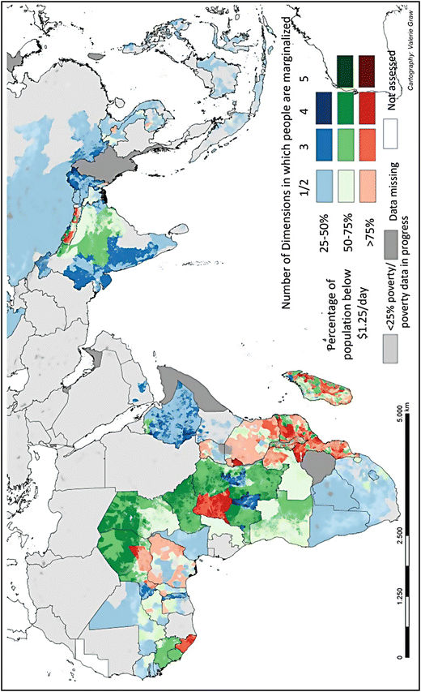
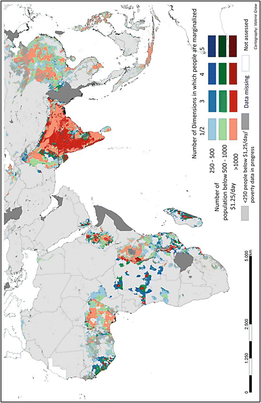

5.1 Why Do We Map Marginality?
Maps are a powerful tool for presenting information in a way that is easily comprehensible by a non-specialist audience. Maps encourage visual comparison and make it easier to look for spatial trends, clusters or other patterns. Maps are therefore useful not only to governments and decision makers, but also to the local communities (Deichmann 1999, 3).
Historically the first and still one of the most famous examples of using geospatial analysis for mapping causal linkages is the cholera map of London made in 1854. By mapping information about drinking water, pumps, and the number of cholera victims, John Snow, an English physician, identified a positive relationship between drinking water and the spread of cholera (Kriz 2010). Today technologies and the development of Geographic Information Systems (GIS) allow us to easily demonstrate simple geographic spatial relationships and to analyze more complex ones.
Mapping and GIS were applied here to illustrate spatial dimensions of marginality at continental and regional levels. We hereby sought to make the marginalized and poor more visible by identifying areas where many poor people live under difficult biophysical and socio-economic conditions. A broad set of variables covering ecological, social and economic dimensions were identified for this purpose and we used existing datasets to describe each variable in the first step of our marginality mapping approach. We focused on Sub-Saharan Africa (SSA) and South Asia (SA), where most of the world’s poor, and in particular the poorest, live (Ahmed et al. 2007; von Braun et al. 2009).
The number of extremely poor and hungry people remains unacceptably high. Being excluded from economic growth and other dimensions of societal development are indications of the extreme poor existing at the margins of society, which may trigger a downward spiral into poverty (Gatzweiler et al. 2011). Marginality is frequently cited as a root cause of poverty (von Braun et al. 2009) and is a complex issue that is not amenable to simple solutions or answers. It may be defined as:
an involuntary position and condition of an individual or group at the margins of social, political, economic, ecological and biophysical systems, preventing them from access to resources, assets, services, restraining freedom of choice, preventing the development of capabilities, and eventually causing extreme poverty (Gatzweiler et al. 2011, 3).
Marginality thus helps explain why individuals or groups are excluded from, or do not have access to processes or resources that would otherwise free them from extreme poverty. Single causal factors alone are not sufficient to explain marginality, which is seen more as a network of contributing causal factors that together lead to extreme poverty. Marginality is not only multidimensional with regard to the causation of poverty, but also multi-relational with regard to the character of the network of causal relations. We identified geographic areas where multiple dimensions of marginality overlap and described the nature of the observed overlap. If the reasoning that marginality contributes to poverty is true, then the areas where multiple dimensions of marginality overlap should also be areas where many people are extremely poor.
5.2 Marginality Hotspots
5.2.1 Finding Proxies for Marginality Indicators on a Global Scale
Given that marginality is a complex and multifaceted phenomenon, we included a broad set of variables covering ecological, social, and economic dimensions of human well-being in the focus regions. These “marginality dimensions” were based on the “spheres of life” defined in Gatzweiler et al. (2011, 13), including: “Economy”; “Quality of life”; “Landscape design and infrastructure”; “Ecosystems, natural resources, and climate”; “Public domain and institutions”; and “Demography.” For the purpose of this mapping exercise, single indicators were used to represent each of the spheres. Here the spheres “Landscape design, land use, and location” and “Infrastructure” are both captured by the single indicator “accessibility”, and the sphere “Behavior and quality of life” is represented by stunting.
For each dimension a cut-off point along a range of indicator values was used to define the threshold below which an area was considered to be marginal. Indicator layers for each of the different dimensions of marginality were overlaid to find the areas where multiple layers of marginality overlap. We defined a ‘marginality hotspot’ as an area in which at least three dimensions of marginality overlapped. The maps were based on national and sub-national data published by the World Bank, the Food and Agriculture Organization of the United Nations (FAO), Harvest Choice, and others. Table 5.1 provides a detailed overview of the data used, the data sources, and the cut-off points chosen for each indicator.
Table 5.1
Proxies used for mapping marginality hotpots
Dimension I: | Economy |
|---|---|
Indicator: | Gross National Income (GNI) per capita PPP (current US$) |
Input: | World Bank Data 2010, visualized and geo-processed in ArcGIS (GIS software from ESRI (Environmental Systems Research Institute) |
Cut-off point: | US$1,005 GNI per capita World Bank definition for a low-income country (≤US$1,005) |
Source: | World Bank (compiled data from 2008 to 2010) |
Dimension II | Behavior and quality of life |
Indicator: | Prevalence of stunting among children under age five, by lowest available subnational administrative unit, varying years (FGGD) |
Input: | Global raster data layer with 5-arc-minutes resolution, data compilation by FAO including the prevalence of stunting, LandScan global population database and the percentage of stunted children under age 5 |
Cut-off point: | Prevalence of stunting among children under 5 >50 %, which is the FGGD definition for ‘very high’ stunting prevalence |
Source: | FAO 2007—the data are based on sources compiled by UNICEF, the map was created within the FGGD Digital Atlas |
Dimension III | Landscape design, land use and location/Infrastructure |
Indicator: | Travel time to major cities—a global map of accessibility |
Input: | Infrastructural data (based on data on populated places, cities, road networks, travel speeds, railway networks, navigable rivers, major water bodies, shipping lanes, borders, urban areas, elevation, and slope) |
Cut-off point: | More than 10 h travel time to the nearest city of 50,000 people or more |
Source: | |
Dimension IV | Ecosystems, natural resources and climate |
Indicator: | Global land area with soil constraints |
Input: | Soil depth, chemical status, fertility, drainage, texture, and miscellaneous constraints |
Cut-off point: | Soils that have ‘frequent severe’ and ‘very frequent severe’ soil constraints as well as ‘unsuitable for agriculture’ according to FAO 2007 classification |
Source: | FGGD, IIASA 2000 study on Global Agro-Ecological Zones (GAEZ) (van Velthuizen et al. 2007) |
Dimension V | Public domain and institutions |
Indicator: | Political stability, governance indicator |
Input: | perceptions of the likelihood that the government will be destabilized or overthrown by unconstitutional or violent means, including political violence or terrorism (Thomas 2009, 5) |
Cut-off point: | Lowest third-quantile |
Source: |
5.2.1.1 Economic Dimension
Gross National Income (GNI) per capita (in current US$) was used to represent the ‘Economy’ dimension rather than Gross Domestic Product (GDP) per capita, which is more commonly used for analyzing economic well-being (Syrquin 2011). This approach follows the United Nations Development Programme (UNDP), 2010 Human Development Report in which GDP was replaced by GNI as a more representative standard of living indicator. In contrast to GDP per capita—which only gives information on the monetary value of goods and services produced in a country but excludes information on how much is retained within the country—GNI also includes international flows such as remittances and aid, and thereby represents a more accurate measure of a country’s economic welfare (UNDP 2010).1 The World Bank also uses GNI per capita as a key indicator for classifying economies into high-, middle- (subdivided into lower middle- and upper middle-income), and low-income countries (World Bank 2011).
The World Bank divides countries by GNI per capita into different income level categories using the World Bank Atlas method (World Bank 2011).2 Low-income countries are those countries with a GNI per capita of US$1,005/year or less, lower middle-income countries are from US$1,006 to US$3,975/year, upper middle-income countries are from US$3,976–12,275/year, and high-income countries are at US$12,276/year or more. For the purpose of marginality mapping we set the cut-off point for the economic dimension at US$1,005/year or less per capita, which is the World Bank threshold for low-income countries.
5.2.1.2 Demography and Quality of Life Dimension
‘Stunting,’ which refers to low height for a particular age resulting from malnutrition over a long period (de Onis et al. 2011) was used to represent the ‘Behavior and quality of life sphere’. Children were defined as stunted if their height was below the fifth percentile for their age group in their reference population (Lewit and Kerrebrock 1997). Stunting is a result of chronic malnutrition and thus a good overall indicator of health and hunger, as it reflects the cumulative effects of long term nutritional deficiency (Yohannes et al. 2010; Syrquin 2011).
The ‘Prevalence of stunting among children under 5 by lowest available subnational administrative unit, varying years’ dataset (FAO 2007) was produced by the FAO ‘Food Insecurity, Poverty, and Environment’ (FGGD) project.3 The data was compiled from different sources such as ‘Demographic and Health Surveys,’ the ‘Multiple Indicator Cluster Survey’ of the United Nations International Children´s Fund (UNICEF/MICS), the World Health Organization (WHO), the Global Database on Child Growth and Malnutrition, as well as national-level surveys. According to the FGGD dataset stunting is rated as ‘very high’ when the prevalence of stunting among children under age 5 is more than 50 %. We used this threshold for the “Behavior and quality of life” dimension of marginality.
5.2.1.3 Landscape Design and Infrastructure Dimension
An interesting approach developed by Nelson (2009) that measures accessibility via the travel time to the nearest major city was used to represent the ‘Landscape design and infrastructure’ sphere. Accessibility was defined as “the travel time to a location of interest using land (road or off-road) or navigable water based travel” (JRC 2010). To calculate travel time, a friction surface had to be developed that included any geographic features of interest for the analysis. The key indicators of this approach are sources of agglomeration economics, and include: population size, population density, travel time, land-cover, and elevation (Hirotsugu and Nelson 2010). An enumeration of all input variables is shown in Table 5.1.
The cut-off point for this dimension was set at the point where more than 10 h of travel time were required to reach the nearest city of 50,000 or more people. The size of 50,000 was based on Uchida and Nelson (2008), who defined settlements with 50,000 inhabitants as large. We chose 10 h of travel time—a relatively high value—as the cut-off-point for an approximation of a travel time required to reach a ‘distant’ city in developing countries. In some countries of SSA people travel days to reach hospitals with specialized services or markets for special goods and services while in other countries—such as Bangladesh—the travel time to the nearest large city is much lower. Therefore we tried to find an approximate travel time as it was difficult to find a precise definition of ‘distant’ as used in the literature.
5.2.1.4 Ecological Dimension
We used data from the FGGD ‘Global land area with soil constraints’ dataset to represent the ‘Ecosystems, natural resources, and climate’ sphere.4 The rural poor are often particularly dependent on local natural resources and the land they live on (Lee and Neves 2009). The chosen dataset includes information on soil depth, soil chemistry, soil fertility, drainage, texture, and miscellaneous land-cover classes (i.e., land that is unsuitable for agriculture, such as salt flats, deserts or glaciers) (van Velthuizen et al. 2007). This information was derived from various datasets, including several GIS layers on: soil, elevation, land-cover, climate variables, and remote sensing images (e.g., for slope data). The ‘Global land area with soil constraints’ dataset includes a broad set of information on soils in 5-min grid-cell resolution. Elevation data from the GTOPO 30—a global digital elevation model dataset of the Earth Observation and Science (EROS) Data Center with a resolution of ca. 1 km (30-arc-seconds)—also provided information on slopes. That dataset was compiled using different raster sources and remote sensing images.5 Based on the FAO classification we defined marginal soils as those in the categories ‘frequent severe soil constraints’ and ‘very frequent severe soil constraints,’ as well as soils classified as ‘unsuitable for agriculture’ (van Velthuizen et al. 2007).
5.2.1.5 Public Domain Dimension
For the sphere of ‘Public domain and institutions’ we took into account the Worldwide Governance Indicators (WGI) developed by Kaufmann et al. (2010) for the World Bank6 that defined governance as:
the traditions and institutions by which authority in a country is exercised. This includes (a) the process by which governments are selected, monitored and replaced; (b) the capacity of the government to effectively formulate and implement sound policies; and (c) the respect of citizens and the state for the institutions that govern economic and social interactions among them.
Following this definition, the WGI were based on six indicators with two measures of governance for each of the three areas: (a) ‘Voice and Accountability’ and ‘Political Stability and the Absence of Violence/Terrorism,’ (b) ‘Government Effectiveness’ and ‘Regulatory Quality,’ and (c) ‘Rule of Law’ and ‘Control of Corruption.’ All indicators were based on subjective or perception based measures of governance gathered through surveys of households and firms, as well as expert assessments produced by various organizations (Kaufmann et al. 2010). The indicators were based on data from 1996 to 2010 and included 212 countries (in 2010), compiled from several hundred individual variables that measured perceptions of governance according to 35 separate data sources conducted globally by 33 different organizations (Kaufmann et al. 2009). We assessed the correlation between all six governance indicators and found that they were all highly correlated.
Among the six indicators, ‘Political Stability’ was chosen to represent the ‘Public domain and institutions’ sphere. Political stability is one of the indicators of the “perceptions of the likelihood that the government will be destabilized or overthrown by unconstitutional or violent means, including political violence or terrorism” (Thomas 2009, 5). According to Collier (2002), civil wars (severe political instability) are one of the three main causes for a country remaining in a ‘developing’ state. Political stability or instability indicates the ability of governments to lead their respective populations. Political stability is also linked to economic growth, in as much as instability is associated with reduced growth in terms of per capita GDP, especially in low-income countries (Polachek and Sevastianova 2010; The Economist 2011). Political stability is also an important issue with regard to the socio-economic development of Africa, as a result of the establishment of an institutional and legislative framework (Ong´ayo 2008). This dimension was described by three quantiles, and we chose the cut-off point at the lowest quantile.
Because we were interested in the number of people affected by the different marginality dimensions we included population data, particularly data on the number of poor by Harvest Choice based on the population database provided by the Socioeconomic Data and Applications Center (SEDAC) and the Center for International Earth Science Information Network (CIESIN) (CIESIN/IFPRI/World 2004). The Gridded Population of the World and the Global Rural–Urban Mapping Project provided data with a resolution of 2.5-arc-minutes on population densities based on a population layer that was compatible with the datasets on social, economic, and earth science fields.
5.2.2 The Marginality Hotspots
Using classification and overlay techniques in ESRI ArcGIS, a ‘marginality hotspot map’ was produced that reveals areas where three or more dimensions of marginality overlapped (Fig. 5.1). In terms of marginality hotspots, we identified heavily affected areas in SA (particularly India and Nepal) and SSA, especially Central and Eastern Africa (Eritrea, Mozambique, Central African Republic, the Democratic Republic of the Congo, Sudan, and large areas of Niger). Comparing the two regions, in SSA the value of at least one dimension lies below the cut-off in nearly 70 % of the total area compared to 20 % for SA (Fig. 5.1). Marginality hotspots included 27 % of the area of SSA and 11 % of SA. In SA there were no areas with five overlapping dimensions in contrast to SSA, where around 1 % of the total area is affected in this way (Fig. 5.2).

Fig. 5.1
Dimensions of marginality—where do negative values in different dimensions of marginality overlap?

Fig. 5.2
Comparison of areas affected by marginality dimensions in Sub-Saharan Africa and South Asia (Based on data from map in Fig. 5.1)
5.3 Poverty and Marginality Hotspots—Where Do They Overlap?
After identifying marginality hotspots based on the data describing the five dimensions of marginality, two additional maps were generated to assess how these dimensions overlap with data on poverty. To this end, marginality hotspots were overlaid with sub-national poverty data provided by Harvest Choice of the proportions of populations, and the total number of people whose consumption levels were below the poverty line of US$1.25/day. It is important to bear in mind that the poverty data set is still under development and that data for some countries was missing, particularly outside of SSA, making it difficult to draw final conclusions. Nevertheless a number of areas can be identified that were marginal in several dimensions and that were also greatly affected by poverty.
Figure 5.3 shows the overlay of the number of dimensions in which people were marginalized and the percentage of the population living below US$1.25/day. We identified marginality and poverty overlap in large areas of SSA as well as SA. Areas where a high percentage of poor people coincided with marginality hotspots were found in Central and South East Africa, especially the northern parts of Niger and in Chad, the Central African Republic, the Democratic Republic of the Congo (especially the western part of the country), Mozambique, Malawi, and Burundi. In SA marginality hotspots coincided with high poverty rates, particularly in Bangladesh and Nepal. The case of Ethiopia highlights the difficulties of relying on official poverty data. In Fig. 5.3 parts of the country appear in dark-blue color indicating marginality hotspots, but official poverty rates for the country are astonishingly low (Ahmed et al. 2007) and no areas of extreme poverty and marginality hotspots overlapped.

Fig. 5.3
Overlay of the number of marginality dimensions with percentages of populations living below US$1.25/day
Figure 5.4 shows the overlay of marginality hotspots with the number of people living below US$1.25/day. The greatest number of marginalized poor in SA was located in India and Bangladesh, and in SSA the most were in Ethiopia, southeastern Africa, and some parts of western Africa. While poverty rates in India were generally not as high as in other regions, large populations were affected, particularly in central and western parts of the country.

Fig. 5.4
Overlay of the number of marginality dimensions with the number of people living on less than US$1.25/day
Comparing the maps in Figs. 5.3 and 5.4 we clearly identified that the percentage of poor and extremely poor was high in SSA, while in SA (particularly India and Bangladesh), the sheer number of poor was extremely high. In contrast Africa’s central regions no longer stand out as clearly on the map when the number of poor people (rather than poverty rates) was taken into account. Nevertheless small areas of the Democratic Republic of the Congo, Ethiopia, Uganda, Burundi, Mozambique, Malawi, and the coastal areas of several West African countries appear to be marginality hotspots where large numbers of poor people live. Figure 5.4 confirms that in Asia the quantity of poor people was extremely high, whereas in Africa the percentages of poor and extremely poor people were particularly high.
5.4 Limitations and Outlook
Marginality is a complex issue that often lies at the root of poverty. To geographically reflect the different dimensions that influence marginality, we undertook this mapping exercise in a first attempt to take into account the different ‘spheres of life,’ instead of focusing on subsets of social, economic, or environmental aspects. The most important limitation of this approach were the variable scales of the different data sets. In the absence of comprehensive sub-national data, we used GNI and political stability data at national-level scales. In contrast data on stunting were provided on sub-national scales, and soil constraints on a pixel-level scale of 5-arc-minute grid cells. These different scales made comparisons difficult. Therefore further work is needed to find more representative data sets at finer levels. An additional advantage would be to refine the pixel resolution, as our mapping approach used a pixel size of 8 × 8 km, which is a small scale for the purpose of global mapping, however, 64 km2 is a relatively large area in terms of the number of people potentially living there and therefore interpretations needed to be made carefully.
We also acknowledge that the determination of the cut-off points in each dimension were arbitrary and therefore debatable. Further research is needed to assess how different cut-off points influence marginality hotspot mapping. One example was our definition of ‘distant’ using the accessibility dataset of Nelson (2009) based on an infrastructure and cost-distance model. Most of the extremely poor live in rural areas, particularly in remote areas (Sachs 2005). Even where available public transport might be unaffordable to those in extreme poverty, the distances in the map were based on the minimum time needed to get to the nearest large settlement using vehicular transportation. The time expenditure is much higher for people without access to vehicular transportation. Further research could apply the accessibility methodology on a more local scale in order to measure walking distances or alternative forms of travel to the nearest roads with regular transportation services.
The use of satellite images to identify marginal areas should also be explored further. The advantage of remote sensing is relatively low cost compared to other methods (except for very high resolution data). It is much more time consuming to conduct a large survey than to process data (for example, land-use data from several remote sensing images). Satellite imagery also provides pixel-level data, allowing researchers to determine the geographic scope of their analyses at greater detail than by relying on national or regional-level data that may generate misleading results.
It was also a challenge to map coupled human-environmental systems. For a more precise observation of environmental aspects, data on climatic factors such as precipitation or drought events should be integrated into analyses. More detailed information on soils could help evaluate the potential for agricultural productivity as well as land use. Finding good indicators of the status of complex socio-ecological systems is therefore challenging. Several mapping approaches are working on this issue, especially those undertaken by the FAO. Some difficulties arose from the lack of data, such as rainfall data in developing countries, because analyses relied on complete time series data information to get more insight in the rainfall variability and its effects (Hughes 2006). Progress is being made on expanding rainfall data collection stations in many remote areas, but in many cases these data are verified only rarely, and therefore the data is not always accurate or consistent. As a result, monitoring and the assessment of environmental variables are increasingly based on remote sensing imagery, offering good tools for monitoring land surface changes, whether human or natural. Nevertheless this data, even if very high resolution, should also be ground-truthed to validate results.
The limitations of mapping approaches are manifold, especially when using data on a global-scale. The lack of data in some areas also makes it difficult to make comparisons between countries and regions. It is important to bear in mind that the maps presented here were primarily meant to provide a general indication of the distribution of particularly disadvantaged areas, which may be analyzed further through more detailed data analysis at smaller scales.
A logical next step in mapping marginality would involve the optimization of indicators for identifying marginality hotspots on a global scale, while developing more reliable and representative approaches on the national level. In addition to identifying hotspots at the global-level, further studies at national and sub-national levels are necessary. Follow-up research will include scenario modeling to better understand causal linkages between different indicators of the spheres of life and to identify possibilities for the design and application of poverty and marginality alleviation efforts.
References
Ahmed AU, Hill RV, Smith LC, Wiesmann DM, Frankenberger T (2007) The world’s most deprived: characteristics and causes of extreme poverty and hunger. 2020 discussion paper 43, International Food Policy Research Institute, Washington, DC
CIESIN/IFPRI/World Bank/CIAT (2004) Global rural–urban mapping project, Version 1 (GRUMPv1): population density grid, Palisades. Center for International Earth Science Information Network, Columbia University/International Food Policy Research Institute/World Bank/Centro Internacional de Agricultura Tropical. Socioeconomic Data and Applications Center, Columbia University, New York. http://sedac.ciesin.columbia.edu/gpw. Accessed 15 Jan 2012
Collier P (2002) On the incidence of Civil War in Africa. J Confl Resolut 46(1):13–28CrossRef
de Onis M, Blössner M, Borghi E (2011) Prevalence and trends of stunting among pre-school children, 1990–2020. Public Health Nutr (Epub):1–7
Deichmann U (1999) Geographic aspects of inequality and poverty. World Bank, Washington, DC. http://siteresources.worldbank.org/INTPGI/Resources/Pro-Poor-Growth/5319_povmap.pdf. Accessed 15 Jan 2012
FAO (2007) Prevalence of stunting among children under five, by lowest available subnational unit, varying years (FGGD). Raster dataset. Food and Agriculture Organization of the United Nations, Rome. http://www.fao.org/geonetwork/srv/en/metadata.show?id=14055&currTab=simple. Accessed 12 Feb 2013
Gatzweiler F, Baumüller H, von Braun J, Ladenburger C (2011) Marginality: addressing the root causes of extreme poverty. ZEF working paper no 77, Center for Development Research, University of Bonn, Bonn
Hirotsugu U, Nelson A (2010) Agglomeration index, towards a new measure of urban concentration. World Institute for Development Economics Research, United Nations University, Helsinki
Hughes D (2006) Comparison of satellite rainfall data with observations from gauging station networks. J Hydrol 327(3–4):399–410CrossRef
JRC (2010) Travel time to major cities. A global map of accessibility. Data source. Joint Research Centre, European Commission, Brussels. http://bioval.jrc.ec.europa.eu/products/gam/sources.htm. Accessed 12 Feb 2013
Kaufmann D, Kraay A, Mastruzzi M (2009) Governance matters VIII: aggregate and individual governance indicators, 1996–2008. World Bank Policy Research working paper no 4978, World Bank, Washington, DC
Kaufmann D, Kraay A, Mastruzzi M (2010) The worldwide governance indicators: methodology and analytical issues. World Bank Policy Research working paper no 5430, World Bank, Washington, DC
Kriz K (2010) Mapping different geographies. Springer, HeidelbergCrossRef
Lee DR, Neves B (2009) Rural poverty and natural resources: improving access and sustainable management. background paper for IFAD 2009 rural poverty report. http://www.ifad.org/rural/rpr2008/chapter2/2.pdf. Accessed 12 Feb 2013
Lewit E, Kerrebrock N (1997) Population-based growth stunting. The future of children. Child Poverty 7(2):149–156CrossRef
Nelson A (2000) Accessibility, transport and travel time information. CIAT hillsides project report, International Center for Tropical Agriculture (CIAT), Cali
Nelson A (2009) Travel time to major cities: a global map of accessibility. Joint Research Centre, European Commission, Brussels. http://bioval.jrc.ec.europa.eu/products/gam/index.htm. Accessed 12 Feb 2013
Ong´ayo AO (2008) Political instability in Africa. Where the problem lies and alternative perspectives. African Diaspora Policy Centre, Amsterdam. http://www.diaspora-centre.org/DOCS/Political_Instabil.pdf. Accessed 18 Jan 2012
Polachek SW, Sevastianova D (2010). Does conflict disrupt growth? Evidence of the relationship between political instability and national economic performance. IZA discussion paper no 4762, Institute for the Study of Labor, Bonn
Sachs J (2005) The end of poverty: how we can make it happen in our lifetime. Penguin Press, New York
Syrquin M (2011) GDP as a measure of economic welfare. ICER working paper no. 3/2011, International Centre for Economic Research, Prague
The Economist (2011) The sun shines bright. The Economist, 3 December 2011, 401(8762):77–79. http://www.economist.com/node/21541008. Accessed 12 Dec 2011
Thomas MA (2009) What do the worldwide governance indicators measure? Eur J Dev Res 22(1):31–54CrossRef
Uchida H, Nelson A (2008) Agglomeration index: towards a new measure of urban concentration. Background paper for the world development report 2009: reshaping economic geography, World Bank, Washington, DC. http://siteresources.worldbank.org/INTWDR2009/Resources/4231006-1204741572978/Hiro1.pdf. Accessed 12 Feb 2013
UNDP (2010) Human Development Report 2010: the real wealth of nations: pathways to human development. United Nations Development Programme, New York
van Velthuizen H, Huddleston B, Fischer G, Salvatore M, Ataman E, Nachtergaele FO, Zanetti M, Bloise M (2007) Mapping biophysical factors that influence agricultural production and rural vulnerability. Food and Agriculture Organization of the United Nations, Rome
von Braun J, Hill RV, Pandya-Lorch R (2009) The poorest and hungry: a synthesis of analyses and actions. In: von Braun J, Hill RV, Pandya-Lorch R (eds) The poorest and hungry: assessments, analyses, and actions. International Food Policy Research Institute, Washington, DC, pp 1–61
World Bank (2009) Governance indicators. World Bank, Washington, DC. http://info.worldbank.org/governance/wgi/index.asp. Accessed 12 Feb 2013
World Bank (2010) World development indicators. World Bank, Washington, DC. http://data.worldbank.org/data-catalog/world-development-indicators. Accessed 12 Feb 2013
World Bank (2011) World Bank atlas method. World Bank, Washington, DC. http://data.worldbank.org/about/country-classifications. Accessed 12 Feb 2013
Yohannes Y, Fritschel H, Olofinbiyi T, Nestorova B, Menon P, Ruel MT, von Grebmer K, von Oppeln C, Towey O, Golden K (2010) 2010 Global Hunger Index: the challenge of hunger: focus on the crisis of child undernutrition. International Food Policy Research Institute, Washington, DC
Footnotes
2
The World Bank Atlas Method includes the use of an atlas conversion factor which should reduce the impact of exchange rate fluctuations in the cross-country comparison of national incomes (http://go.worldbank.org/ IEH2RL06U0).
3
The Food Insecurity, Poverty, and Environment Global GIS Database (FGGD) was also implemented by FAO (as FIVIMS) as an initiative to improve the use of disaggregated spatial information on different scales, global- and national-levels (see also: http://geonetwork3.fao.org/fggd).
5
For more information visit: http://eros.usgs.gov/#/Find_Data/Products_and_Data_Available/gtopo30_info